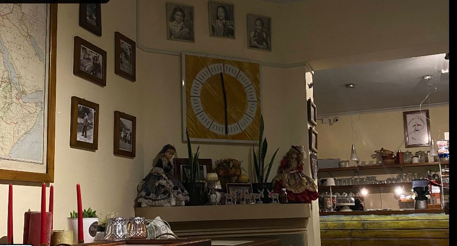
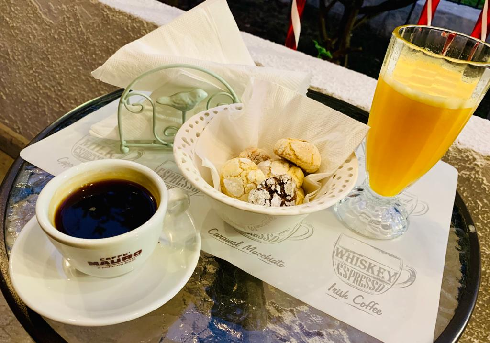
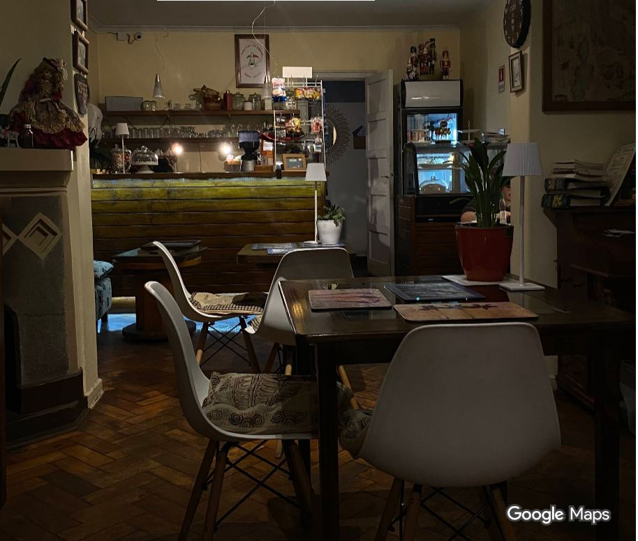
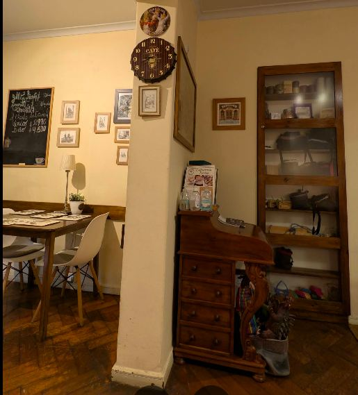
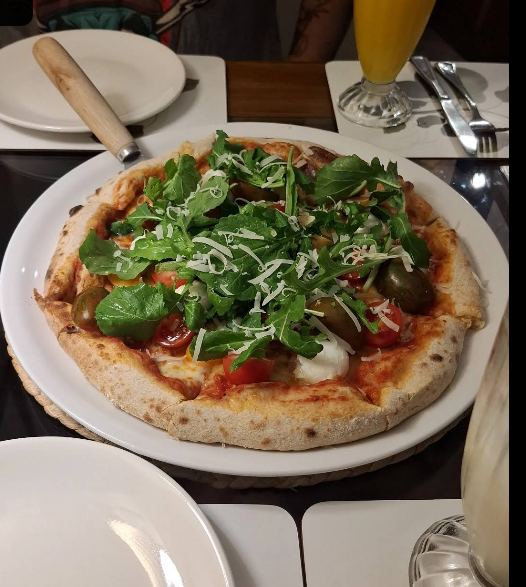
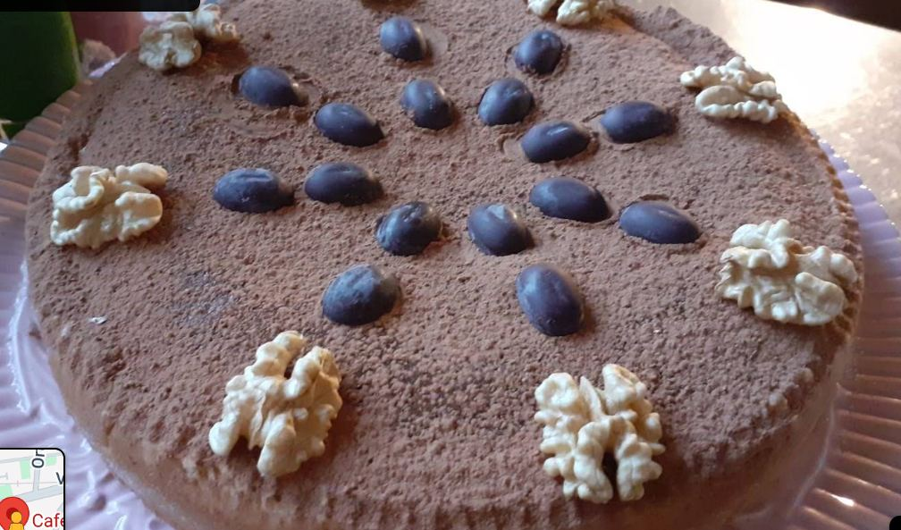

Los Cerezos 117 · Ñuñoa · Caffetteria italiana desde 2019
Come vola
una rondine.
Café, pastelería y pasta italiana hecha por sus propios dueños, Mauro y María Elena, en un rincón de Ñuñoa decorado con historia de familia. 4.7★ en Google, con 94 opiniones.
Quiénes somos
Una golondrina
que volvió a casa.
"Rondine" significa golondrina en italiano — y así firman Mauro y María Elena Ormeño cada respuesta que le dejan a sus clientes en Google: "esperamos que te conviertas en una fiel rondine". Desde 2019 atienden ellos mismos su caffetteria en Los Cerezos, Ñuñoa, con recetas y un ambiente que se sienten hechos en casa.
El local está decorado con piezas de familia: un mapa antiguo de Italia, retratos en blanco y negro y objetos con historia — el tipo de detalle que solo tiene un negocio atendido por sus propios dueños, no una cadena.


Lo que dicen de nosotros
"La señora Elena
se encargó de que nos sintiéramos como reyes."
Así lo describió Jairo González después de visitar el local. Entre los temas que más se repiten en las 94 opiniones de Google están lo italiano de la propuesta, los helados, el ambiente y clásicos como el cannoli, los ñoquis y los amaretti.
Un vistazo
El rincón de siempre.




La carta
Cucina di famiglia.
Lo que dicen
4.7
94 opiniones en Google Maps · 87 son de 5 estrellas
"Volvimos a Caffetteria La Rondine por segunda vez y, nuevamente, la experiencia fue maravillosa."
"Tenía años que no me sentía tan bien atendido en cualquier lugar. La señora Elena se encargó de que nos sintiéramos como reyes, siempre asegurándose de brindarnos más de lo que esperábamos."
"¡Todo, todo rico! Exquisito! María Elena y Mauro, gracias por tanto amor en sus preparaciones y en la atención."
Visítanos
Los Cerezos 117.
Los Cerezos 117
Ñuñoa, Región Metropolitana
Lunes a sábado, 16:00 a 21:00. Domingo cerrado.
* WhatsApp confirmado directo del bio de Instagram oficial del local. Sin presencia confirmada en Rappi/Uber Eats/PedidosYa.